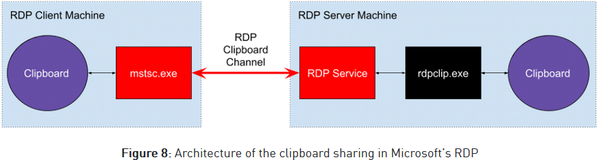

https://research.checkpoint.com/reverse-rdp-attack-code-execution-on-rdp-clients/
There is no released PoC for this at time of article, but it details the attack that can be done.
Microsoft does not believe that this meets their bar for servicing, ie: no Microsoft CVE
After reading more about the different formats in MSDN, one format immediately attracted our attention: “CF_HDROP”. This format seems responsible for “Drag & Drop” (hence the name HDROP), and in our case, the “Copy & Paste” feature. It’s possible to simply copy a group of files from the first computer, and paste them in the second computer. For example, a malware researcher might want to copy the output log of his script from the remote VM to his desktop.
It was roughly at this point, while I was trying to figure out the flow of the data, Omer (@GullOmer) asked me if and where PathCanonicalizeA is called. If the client fails to properly canonicalize and sanitize the file paths it receives, it could be vulnerable to a path-traversal attack, allowing the server to drop arbitrary files in arbitrary paths on the client’s computer, a very strong attack primitive. After failing to find imports for the canonicalization function, we dug in deeper, trying to figure out the overall architecture for this data flow.
Figure 8 summarizes our findings:

This is where rdpclip.exe comes into play. It turns out that the server accesses the clipboard through a broker, and that is rdpclip.exe. In fact, rdpclip.exe is just a normal process (we can kill / spawn it ourselves) that talks to the RDP service using a dedicated virtual channel API.
At this stage, we installed ClipSpy, and started to dynamically debug the clipboard’s data handling that is done inside rdpclip.exe.
These are our conclusions regarding the data flow in an ordinary “Copy & Paste” operation in which a file is copied from the server to the client:
- On the server, the “copy” operation creates a clipboard data of the format “CF_HDROP”.
- When the “paste” is performed in the client’s computer, a chain of events is triggered.
- The rdpclip.exe process on the server is asked for the clipboard’s content, and converts it to a FileGroupDescriptor (Fgd) clipboard format.
- The metadata of the files is added to the descriptor one at a time, using the HdropToFgdConverter::AddItemToFgd() function.
- After it is finished, the Fgd blob is sent to the RDP service on the server.
- The server simply wraps it and sends it to the client.
- The client unwraps it and stores it in its own clipboard.
- A “paste” event is sent to the process of the focused window (for example, explorer.exe).
- This process handles the event and reads the data from the clipboard.
- The content of the files is received over the RDP connection itself.
Path Traversal over the shared RDP clipboard
If we look back on the steps performed on the received clipboard data, we notice that the client doesn’t verify the received Fgd blob that came from the RDP server. And indeed, if we modify the server to include a path traversal path of the form: ..\canary1.txt, ClipSpy shows us (see Figure 9) that it was stored “as is” on the client’s clipboard:

And that’s practically it.
If a client uses the “Copy & Paste” feature over an RDP connection, a malicious RDP server can transparently drop arbitrary files to arbitrary file locations on the client’s computer, limited only by the permissions of the client. For example, we can drop malicious scripts to the client’s “Startup” folder, and after a reboot they will be executed on his computer, giving us full control.
Note: In our exploit, we simply killed rdpclip.exe, and spawned our own process to perform the path traversal attack by adding additional malicious file to every “Copy & Paste” operation. The attack was performed with “user” permissions, and does not require the attacker to have “system” or any other elevated permission.
PoC video by checkpoint.
Taking it one step further
Every time a clipboard is updated on either side of the RDP connection, a CLIPRDR_FORMAT_LIST message is sent to the other side, to notify it about the new clipboard formats that are now available. We can think of it as a complete sync between the clipboards of both parties (except for a small set of formats that are treated differently by the RDP connection itself). This means that our malicious server is notified whenever the client copies something to his “local” clipboard, and it can now query the values and read them. In addition, the server can notify the client about a clipboard “update” without the need for a “copy” operation inside the RDP window, thus completely controlling the client’s clipboard without being noticed.
Scenario #1:
A malicious RDP server can eavesdrop on the client’s clipboard – this is a feature, not a bug. For example, the client locally copies an admin password, and now the server has it too.
Scenario #2:
A malicious RDP server can modify any clipboard content used by the client, even if the client does not issue a “copy” operation inside the RDP window. If you click “paste” when an RDP connection is open, you are vulnerable to this kind of attack. For example, if you copy a file on your computer, the server can modify your (executable?) file / piggy-back your copy to add additional files / path-traversal files using the previously shown PoC.
We were able to successfully test this attack scenario using NCC’s .NET deserialization PoC:
- The server executes their PoC, and positions in the clipboard a .NET content that will pop a calculator (using the “System.String” format).
- When the client clicks “paste” inside the PowerShell program, the deserialization occurs and a calc is popped.
Note: The content of the synced clipboard is subject to Delayed Rendering. This means that the clipboard’s content is sent over the RDP connection only after a program actively asks for it, usually by clicking “paste”. Until then, the clipboard only holds the list of formats that are available, without holding the content itself.